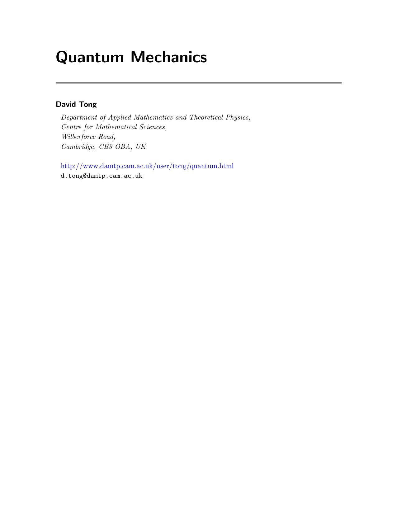

Quantum Mechanics
David Tong

1. Introduction
1.1 The Wavefunction
1.1.1 Normalization
1.1.2 Superposition
1.2 The Schrödinger Equation
1.2.1 The Hamiltonian
1.2.2 Conservation of Probability
1.2.3 The Collapse of the Wavefunction
1.3 The Double Slit Experiment
2. A Quantum Particle in One Dimension
2.1 The Free Particle
2.1.1 A Particle on a Circle
2.1.2 The Infinite Potential Well
2.1.3 The Gaussian Wavepacket
2.1.4 A First Look at Expectation Values
2.2 The Harmonic Oscillator
2.2.1 The Energy Spectrum
2.2.2 The Wavefunctions
2.3 Bound States
2.3.1 A Finite Potential Well
2.3.2 A Delta Function Potential
2.3.3 Some General Results
2.3.4 The Double Well Potential
2.4 Scattering
2.4.1 A Step Potential
2.4.2 Tunnelling
3. The Formalism of Quantum Mechanics
3.1 States
3.1.1 The Inner Product
3.2 Operators and Observables
3.2.1 Eigenfunctions and Eigenvalues
3.2.2 Hermitian Operators
3.2.3 Momentum Eigenstates and the Fourier Transform
3.3 Measurement
3.3.1 Expectation Values
3.4 Commutation Relations
3.4.1 The Heisenberg Uncertainty Principle
3.5 Interpretations of Quantum Mechanics
3.5.1 Hidden Variables
3.5.2 Copenhagen and Many Worlds
3.5.3 Shut Up and Calculate
4. A Quantum Particle in Three Dimensions
4.1 Angular Momentum
4.1.1 Angular Momentum Commutation Relations
4.1.2 The Eigenfunctions are Spherical Harmonics
4.2 Solving the 3d Schrödinger Equation
4.2.1 The 3d Harmonic Oscillator
4.2.2 Bound States in 3d
4.2.3 Why Can't the Wavefunction Diverge at the Origin?
4.3 The Hydrogen Atom
4.3.1 The Energy Spectrum
4.3.2 The Wavefunctions
4.4 A Pre-Quantum Quantum History
4.4.1 The Bohr Model
4.4.2 What About the Photon?
4.5 A First Look at Renormalization
4.5.1 A Delta Function Potential in the Plane
4.5.2 Renormalization in Quantum Mechanics
1.1.2 Superposition
1.2 The Schrödinger Equation
1.2.1 The Hamiltonian
1.2.2 Conservation of Probability
1.2.3 The Collapse of the Wavefunction
1.3 The Double Slit Experiment
2. A Quantum Particle in One Dimension
2.1 The Free Particle
2.1.1 A Particle on a Circle
2.1.2 The Infinite Potential Well
2.1.3 The Gaussian Wavepacket
2.1.4 A First Look at Expectation Values
2.2 The Harmonic Oscillator
2.2.1 The Energy Spectrum
2.2.2 The Wavefunctions
2.3 Bound States
2.3.1 A Finite Potential Well
2.3.2 A Delta Function Potential
2.3.3 Some General Results
2.3.4 The Double Well Potential
2.4 Scattering
2.4.1 A Step Potential
2.4.2 Tunnelling
3. The Formalism of Quantum Mechanics
3.1 States
3.1.1 The Inner Product
3.2 Operators and Observables
3.2.1 Eigenfunctions and Eigenvalues
3.2.2 Hermitian Operators
3.2.3 Momentum Eigenstates and the Fourier Transform
3.3 Measurement
3.3.1 Expectation Values
3.4 Commutation Relations
3.4.1 The Heisenberg Uncertainty Principle
3.5 Interpretations of Quantum Mechanics
3.5.1 Hidden Variables
3.5.2 Copenhagen and Many Worlds
3.5.3 Shut Up and Calculate
4. A Quantum Particle in Three Dimensions
4.1 Angular Momentum
4.1.1 Angular Momentum Commutation Relations
4.1.2 The Eigenfunctions are Spherical Harmonics
4.2 Solving the 3d Schrödinger Equation
4.2.1 The 3d Harmonic Oscillator
4.2.2 Bound States in 3d
4.2.3 Why Can't the Wavefunction Diverge at the Origin?
4.3 The Hydrogen Atom
4.3.1 The Energy Spectrum
4.3.2 The Wavefunctions
4.4 A Pre-Quantum Quantum History
4.4.1 The Bohr Model
4.4.2 What About the Photon?
4.5 A First Look at Renormalization
4.5.1 A Delta Function Potential in the Plane
4.5.2 Renormalization in Quantum Mechanics
# Topics in Quantum Mechanics
David Tong
## 0. Introduction
## 1. Discrete Symmetries
### 1.1 Parity
#### 1.1.1 Parity as a Quantum Number
#### 1.1.2 Intrinsic Parity
### 1.2 Time Reversal Invariance
#### 1.2.1 Time Reversal is an Anti-Unitary Operator
#### 1.2.2 An Example: Spinless Particles
#### 1.2.3 Another Example: Spin
#### 1.2.4 Kramers Degeneracy
## 2. Approximation Methods
### 2.1 The Variational Method
#### 2.1.1 An Upper Bound on the Ground State
#### 2.1.2 An Example: The Helium Atom
#### 2.1.3 Do Bound States Exist?
#### 2.1.4 An Upper Bound on Excited States
### 2.2 WKB
#### 2.2.1 The Semi-Classical Expansion
#### 2.2.2 A Linear Potential and the Airy Function
#### 2.2.3 Bound State Spectrum
#### 2.2.4 Bohr-Sommerfeld Quantization
#### 2.2.5 Tunnelling out of a Trap
### 2.3 Changing Hamiltonians, Fast and Slow
#### 2.3.1 The Sudden Approximation
#### 2.3.2 An Example: Quantum Quench of a Harmonic Oscillator
#### 2.3.3 The Adiabatic Approximation
#### 2.3.4 Berry Phase
#### 2.3.5 An Example: A Spin in a Magnetic Field
#### 2.3.6 The Born-Oppenheimer Approximation
#### 2.3.7 An Example: Molecules
## 3. Atoms
### 3.1 Hydrogen
#### 3.1.1 A Review of the Hydrogen Atom
#### 3.1.2 Relativistic Motion
#### 3.1.3 Spin-Orbit Coupling and Thomas Precession
#### 3.1.4 Zitterbewegung and the Darwin Term
#### 3.1.5 Finally, Fine-Structure
#### 3.1.6 Hyperfine Structure
#### 3.1.7 Atoms in an Expanding Universe
### 3.2 Atomic Structure
#### 3.2.1 A Closer Look at the Periodic Table
#### 3.2.2 Helium and the Exchange Energy
#### 3.2.3 An Instability of (Very) Large Nuclei
### 3.3 Self-Consistent Field Method
#### 3.3.1 The Hartree Method
#### 3.3.2 The Slater Determinant
#### 3.3.3 The Hartree-Fock Method
## 4. Atoms in Electromagnetic Fields
### 4.1 The Stark Effect
#### 4.1.1 The Linear Stark Effect
#### 4.1.2 The Quadratic Stark Effect
#### 4.1.3 A Little Nazi-Physics History
### 4.2 The Zeeman Effect
#### 4.2.1 Strong(ish) Magnetic Fields
#### 4.2.2 Weak Magnetic Fields
#### 4.2.3 The Discovery of Spin
### 4.3 Shine a Light
#### 4.3.1 Rabi Oscillations
#### 4.3.2 Spontaneous Emission
#### 4.3.3 Selection Rules
### 4.4 Photons
#### 4.4.1 The Hilbert Space of Photons
#### 4.4.2 Coherent States
#### 4.4.3 The Jaynes-Cummings Model
## 5. Quantum Foundations
### 5.1 Entanglement
#### 5.1.1 The Einstein, Podolsky, Rosen "Paradox"
#### 5.1.2 Bell's Inequality
#### 5.1.3 CHSH Inequality
#### 5.1.4 Entanglement Between Three Particles
#### 5.1.5 The Kochen-Specker Theorem
### 5.2 Entanglement is a Resource
#### 5.2.1 The CHSH Game
#### 5.2.2 Dense Coding
#### 5.2.3 Quantum Teleportation
#### 5.2.4 Quantum Key Distribution
### 5.3 Density Matrices
#### 5.3.1 The Bloch Sphere
#### 5.3.2 Entanglement Revisited
#### 5.3.3 Entropy
### 5.4 Measurement
#### 5.4.1 Projective Measurements
#### 5.4.2 Generalized Measurements
#### 5.4.3 The Fate of the State
### 5.5 Open Systems
#### 5.5.1 Quantum Maps
#### 5.5.2 Decoherence
#### 5.5.3 The Lindblad Equation
## 6. Scattering Theory
### 6.1 Scattering in One Dimension
#### 6.1.1 Reflection and Transmission Amplitudes
#### 6.1.2 Introducing the S-Matrix
#### 6.1.3 A Parity Basis for Scattering
#### 6.1.4 Bound States
#### 6.1.5 Resonances
### 6.2 Scattering in Three Dimensions
#### 6.2.1 The Cross-Section
#### 6.2.2 The Scattering Amplitude
#### 6.2.3 Partial Waves
#### 6.2.4 The Optical Theorem
#### 6.2.5 An Example: A Hard Sphere and Spherical Bessel Functions
#### 6.2.6 Bound States
#### 6.2.7 Resonances
### 6.3 The Lippmann-Schwinger Equation
#### 6.3.1 The Born Approximation
#### 6.3.2 The Yukawa Potential and the Coulomb Potential
#### 6.3.3 The Born Expansion
### 6.4 Rutherford Scattering
#### 6.4.1 The Scattering Amplitude
### 6.5 Scattering Off a Lattice
#### 6.5.1 The Bragg Condition
#### 6.5.2 The Structure Factor
#### 6.5.3 The Debye-Waller Factor
Back to Home